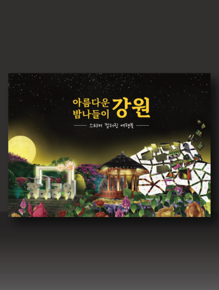
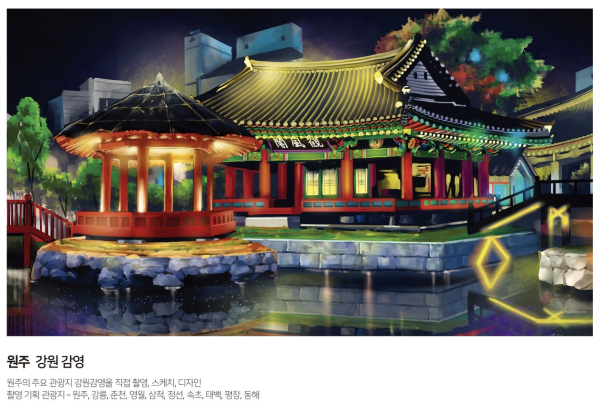
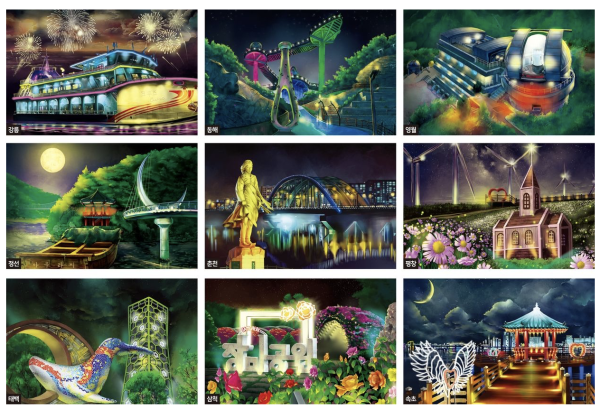
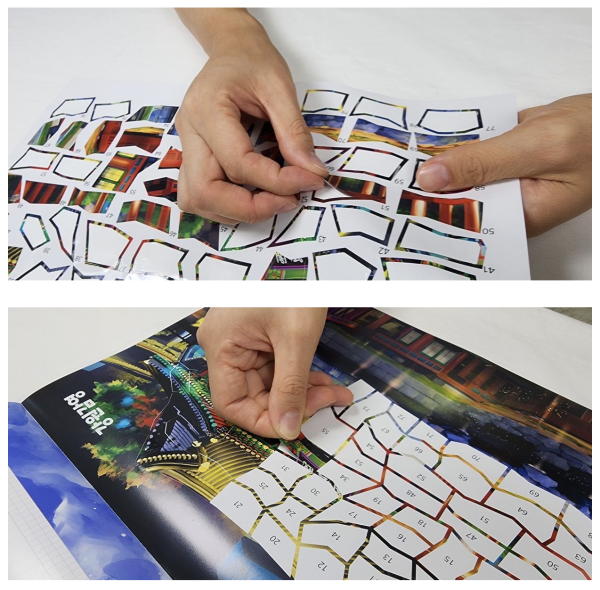

우리마더에서 개발한 '아름다운 밤나들이 강원' 스티커북 텀블벅 펀딩 시작!
‘아름다운 밤나들이 강원’은 가볍게 산책하고 즐기고 느끼는 나들이를 ‘낮’ 아닌 ‘밤’에 이루어지는 로맨틱한 모습으로 표현했습니다.
강원도의 밤이 ‘무서움’이 아닌 새로운 ‘빛의 나들이’로 소개될 수 있도록 강원도만의 아름다움을 담았습니다. 강원도 여행은 숲과 바다로 이루어져 있습니다.
밝은 ‘낮’에도 아름답지만, 어두운 ‘밤’에는 또 다른 빛들로 낮에 느낄 수 없는 아름다움을 선사합니다.
강원도의 ‘빛으로 아름다움을 느낄 수 있는’ 장소 10개 지역으로 선정하여 담았습니다.
지금 바로 우리마더와 함께 떠나보세요!
펀딩은 10월 6일까지입니다 ^_^